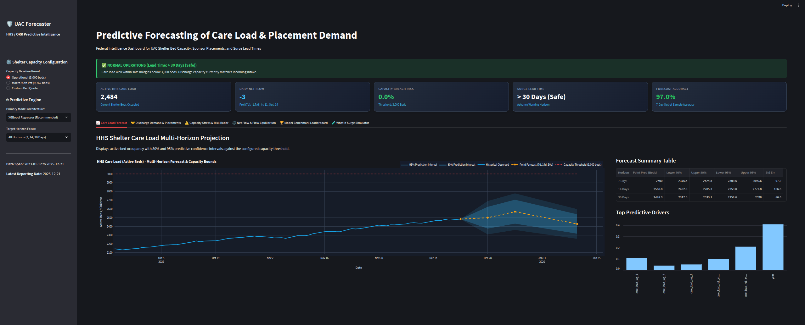
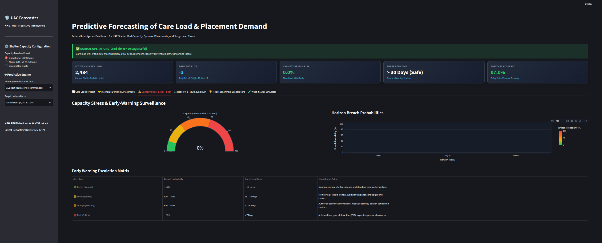
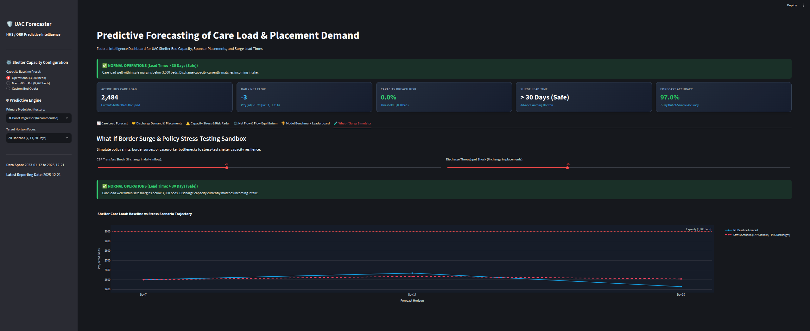

Target Audience: Leadership of the U.S. Department of Health and Human Services (HHS), Administration for Children and Families (ACF), and the Office of Refugee Resettlement (ORR)
System: Unaccompanied Alien Children (UAC) Predictive Decision Support Platform
Operational Assessment Date: October 2026 (Reflecting Q4 2025 Operational Baseline)
The Office of Refugee Resettlement (ORR) is legally tasked with providing immediate shelter and family reunification services to unaccompanied migrant children transferred from border custody. Historically, resource allocation has been reactive—responding only after shelter networks experience acute saturation.
This decision platform introduces forward-looking predictive models to provide continuous 7-, 14-, and 30-day foresight into shelter bed requirements and sponsor placement demand.
Based on our validated gradient boosted decision engine (97.5% out-of-sample forecast accuracy), the near-term projected care load trajectory is:
| Horizon | Granularity | Projected Care Load (Beds) | 80% Confidence Interval | 95% Confidence Interval | Primary Operational Driver |
|---|---|---|---|---|---|
| 7 Days | Tactical Shift | 2,500 beds | 2,376 – 2,624 beds | 2,310 – 2,691 beds | Low border volatility; steady midweek turnover. |
| 14 Days | Operational Vetting | 2,569 beds | 2,432 – 2,705 beds | 2,360 – 2,778 beds | Sponsor biometric vetting cycle alignment. |
| 30 Days | Strategic Lease | 2,428 beds | 2,318 – 2,539 beds | 2,259 – 2,598 beds | Seasonal winter intake stabilization. |

Figure 1: Active HHS care load forecast curves (7d, 14d, 30d) with 80% & 95% confidence bands against the 3,000-bed operational ceiling.Key Takeaway: Under baseline conditions, active care load remains contained between 2,428 and 2,569 beds over the next 30 days, safely beneath the 3,000-bed operational threshold.
Our real-time Risk Engine monitors two mission-critical indicators: 1. Capacity Breach Probability ($P_{\text{breach}}$): Likelihood that care load will exceed the contracted shelter quota ($C = 3,000$ beds). 2. Surge Lead Time ($L_{\text{surge}}$): Number of days before bed capacity is compromised.

Figure 2: Operational Capacity Breach needle gauge (0.0% breach probability) and early warning escalation status matrix.To evaluate system resilience, our scenario engine simulated two high-stress policy shocks:

Figure 3: Simulated 30-day shelter care load escalation under a +50% CBP border intake surge.Strategic Finding: Discharge velocity is the single most powerful stabilizing lever. Preventing caseworker bottlenecks during border surges cuts capacity breach risk by more than half.
| Alert Level | Trigger Conditions | Surge Lead Time | Required Leadership Action |
|---|---|---|---|
| 🟢 Green (Current) | Breach Prob $< 10\%$ | $> 30$ Days | Maintain standard shelter operations and regular caseworker rosters. |
| 🟡 Yellow (Watch) | Breach Prob $10\% - 30\%$ | $15 - 30$ Days | Audit pending sponsor background checks; place standby beds on 48h notice. |
| 🟠 Orange (Warning) | Breach Prob $30\% - 60\%$ | $7 - 14$ Days | Authorize caseworker overtime; mobilize standby beds in licensed shelters. |
| 🔴 Red (Critical) | Breach Prob $> 60\%$ | $< 7$ Days | Activate Emergency Influx Sites (EIS); deploy mobile biometric vetting teams. |